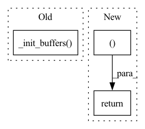

Pattern ID :15522
Before Change
@torch.jit.export
def step(self, step: int, lprobs, scores):
self._init_buffers( lprobs)
bsz, beam_size, vocab_size = lprobs.size()
if beam_size % self.num_groups != 0:
raise ValueError(
"DiverseBeamSearch requires --beam to be divisible by the number of groups"After Change
scores_buf = torch.stack(scores_G, dim=2).view(bsz, -1)
indices_buf = torch.stack(indices_G, dim=2).view(bsz, -1)
beams_buf = torch.stack(beams_G, dim=2).view(bsz, -1)
return scores_buf, indices_buf, beams_buf
class Sampling(Search):
sampling_topk: intIn pattern: SUPERPATTERN
Frequency: 6
Non-data size: 3
Instances Fragment ID: 52569638
Project Name: mohammadkhalifa/fairseq-tagging
Commit Name: 07eed27d9fa6f1feaf2d09ba25ff26a643e70b3a
Time: 2020-02-26
Author: myleott@fb.com
File Name: fairseq/search.py
M Class Name: DiverseBeamSearch
N Class Name: DiverseBeamSearch
M Method Name: step(4)
N Method Name: step(4)
M Parent Class: Search
N Parent Class: Search
M File Name: fairseq/search.py
N File Name: fairseq/search.py
M Start Line: 131
M End Line: 175
N Start Line: 126
N End Line: 159
Before Change
@torch.jit.export
def step(self, step: int, lprobs, scores: Optional[Tensor]):
self._init_buffers( lprobs)
bsz, beam_size, vocab_size = lprobs.size()
if step == 0:
// at the first step all hypotheses are equally likely, so useAfter Change
indices_buf = top_prediction[1]
beams_buf = torch.div(indices_buf, vocab_size)
indices_buf.fmod_(vocab_size)
return scores_buf, indices_buf, beams_buf
class LengthConstrainedBeamSearch(Search):
def __init__(self, tgt_dict, min_len_a, min_len_b, max_len_a, max_len_b): Fragment ID: 52569639
Project Name: kssteven418/i-bert
Commit Name: 07eed27d9fa6f1feaf2d09ba25ff26a643e70b3a
Time: 2020-02-26
Author: myleott@fb.com
File Name: fairseq/search.py
M Class Name: BeamSearch
N Class Name: BeamSearch
M Method Name: step(4)
N Method Name: step(4)
M Parent Class: Search
N Parent Class: Search
M File Name: fairseq/search.py
N File Name: fairseq/search.py
M Start Line: 66
M End Line: 91
N Start Line: 76
N End Line: 80
Before Change
@torch.jit.export
def step(self, step: int, lprobs, scores):
self._init_buffers( lprobs)
bsz, beam_size, vocab_size = lprobs.size()
if step == 0:
// at the first step all hypotheses are equally likely, so useAfter Change
torch.gather(scores[:, :, step - 1], dim=1, index=beams_buf)
)
return scores_buf, indices_buf, beams_buf
class DiverseSiblingsSearch(Search):
Fragment ID: 52569637
Project Name: mohammadkhalifa/fairseq-tagging
Commit Name: 07eed27d9fa6f1feaf2d09ba25ff26a643e70b3a
Time: 2020-02-26
Author: myleott@fb.com
File Name: fairseq/search.py
M Class Name: Sampling
N Class Name: Sampling
M Method Name: step(4)
N Method Name: step(4)
M Parent Class: Search
N Parent Class: Search
M File Name: fairseq/search.py
N File Name: fairseq/search.py
M Start Line: 234
M End Line: 299
N Start Line: 233
N End Line: 276